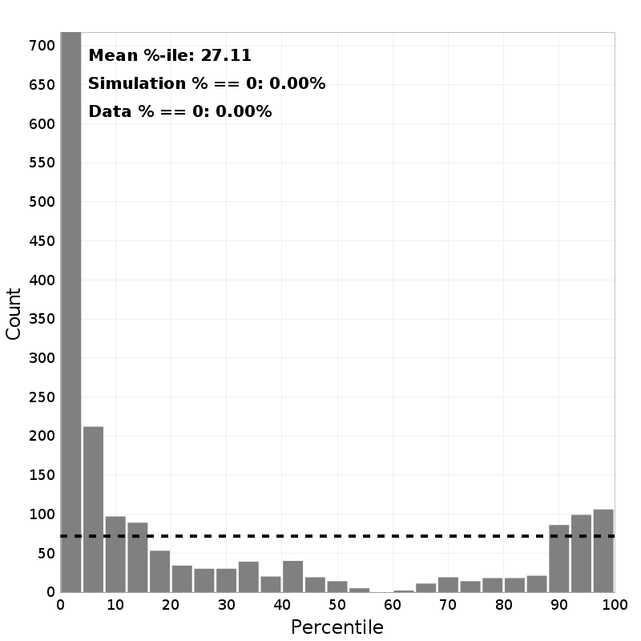
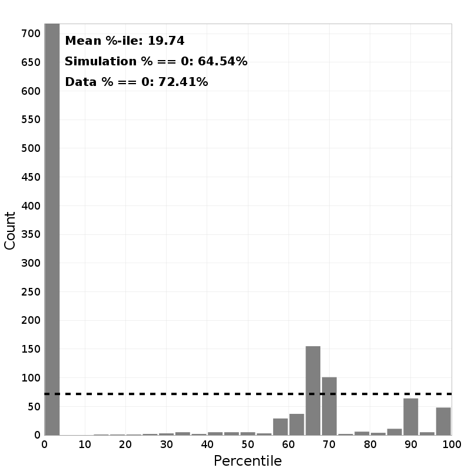
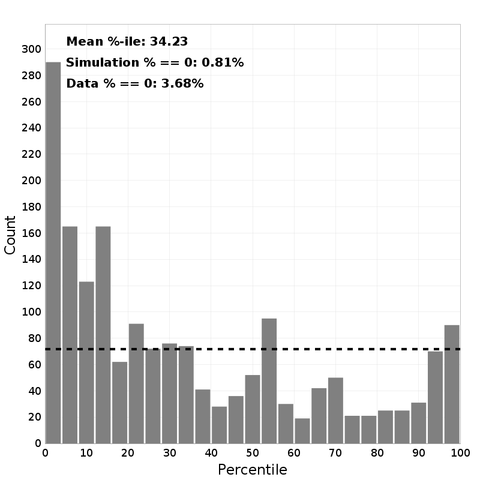
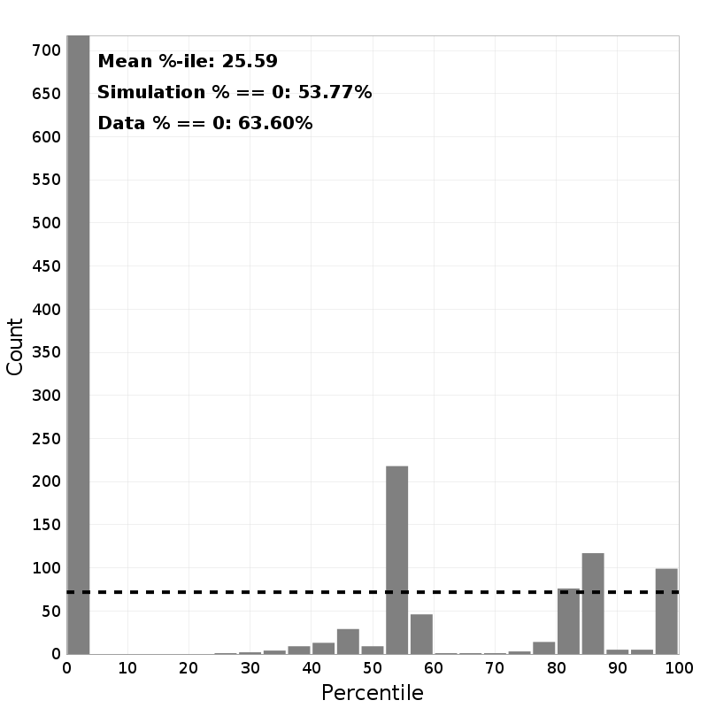
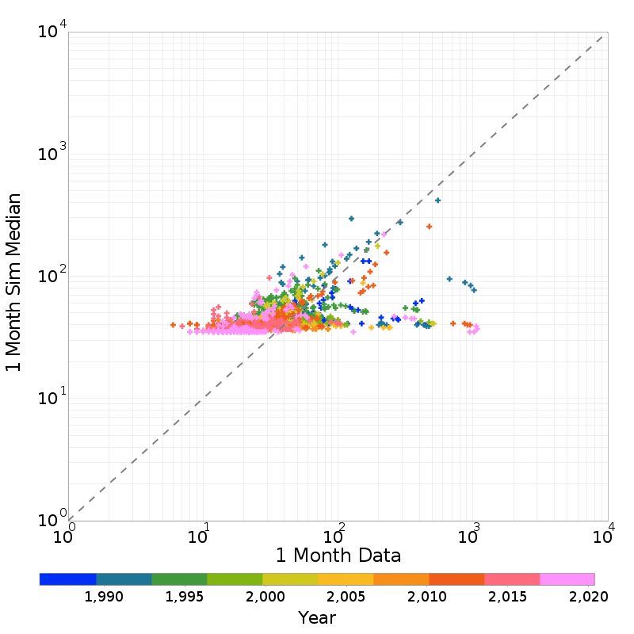
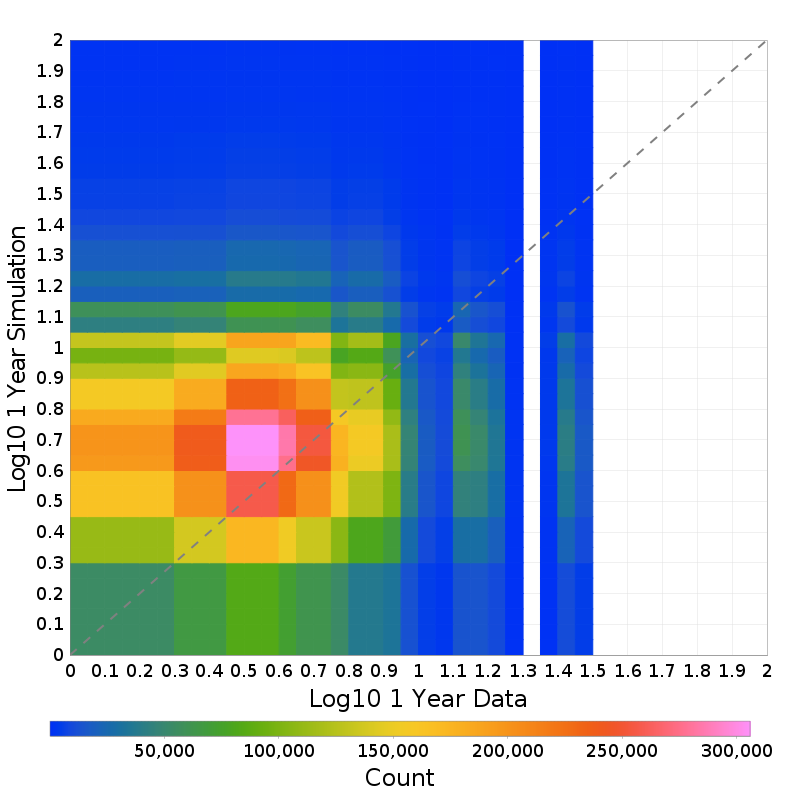
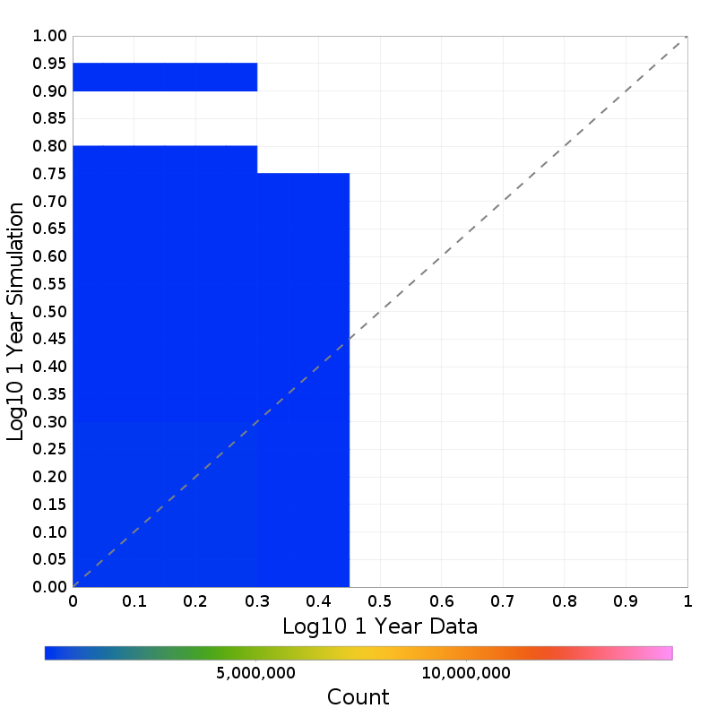
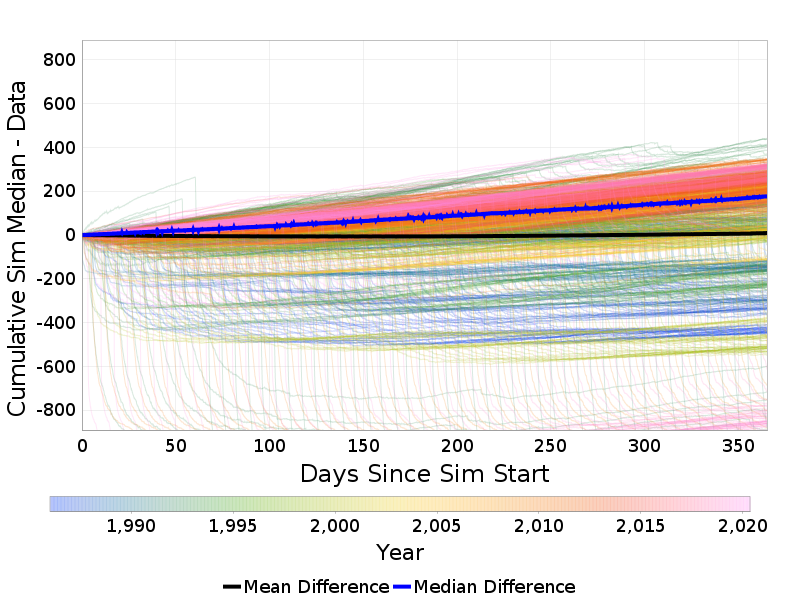
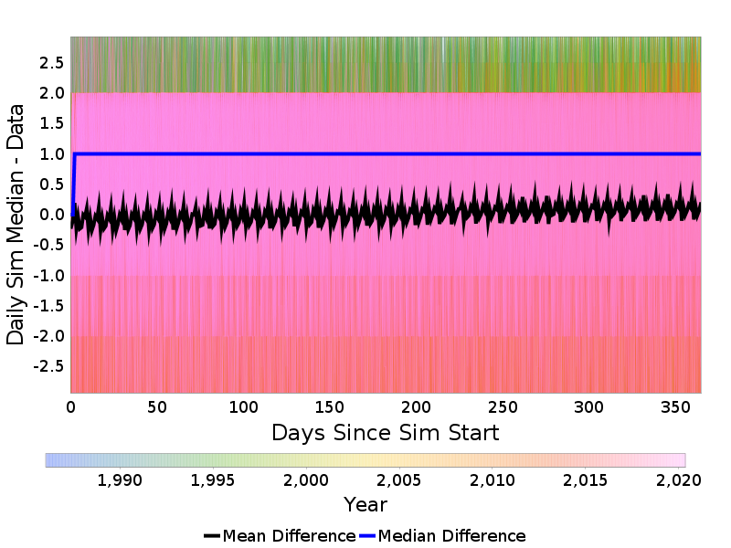
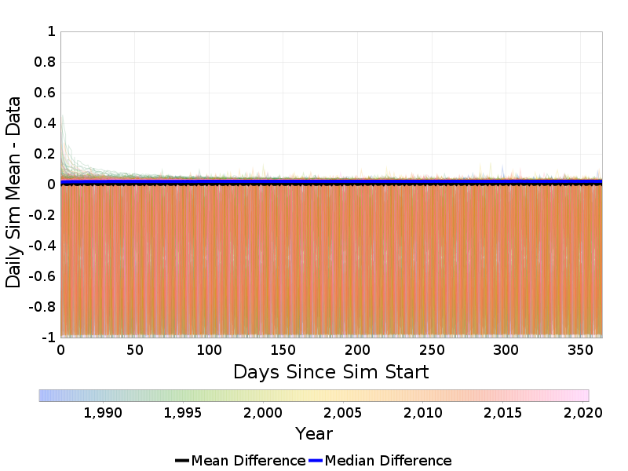

Aggregated ETAS Weekly Run Data Comparisons
Table Of Contents
Data Percentile Histograms
(top)
Histogram of the percentile of the actual event count within the simulation distribution, for various magnitudes and durations.
| Min Mag | 1 Day | 1 Week | 1 Month | 1 Year |
|---|
| M≥2.5 |  |  | |  |
| M≥3.0 | |  | |  |
| M≥4.0 | | | |  |
| M≥5.0 |  |  |  |  |
| M≥6.0 |  |  |  |  |
| M≥7.0 |  |  | | |
Data vs Model Count Scatters
(top)
Scatter plots of the actual event count (x-axis) vs the simulation mean or median value, for different durations and magnitude thresholds.
1 Day Scatters
(top)
| Min Mag | Mean Simulation Values | Median Simulation Values | Individual Catalogs |
|---|
| M≥2.5 | |  | |
| M≥3.0 | |  | |
| M≥4.0 |  | |  |
| M≥5.0 |  |  | |
| M≥6.0 | |  | |
| M≥7.0 | (N/A) | (N/A) | (N/A) |
1 Week Scatters
(top)
| Min Mag | Mean Simulation Values | Median Simulation Values | Individual Catalogs |
|---|
| M≥2.5 |  | | |
| M≥3.0 |  | |  |
| M≥4.0 |  |  |  |
| M≥5.0 | |  | |
| M≥6.0 |  | |  |
| M≥7.0 | |  | |
1 Month Scatters
(top)
| Min Mag | Mean Simulation Values | Median Simulation Values | Individual Catalogs |
|---|
| M≥2.5 |  |  | |
| M≥3.0 |  |  | |
| M≥4.0 | |  |  |
| M≥5.0 | |  |  |
| M≥6.0 |  | |  |
| M≥7.0 | |  | |
1 Year Scatters
(top)
| Min Mag | Mean Simulation Values | Median Simulation Values | Individual Catalogs |
|---|
| M≥2.5 |  | |  |
| M≥3.0 | |  |  |
| M≥4.0 |  |  |  |
| M≥5.0 |  |  |  |
| M≥6.0 |  |  |  |
| M≥7.0 | | |  |
Data Divergence Over Time
(top)
These plots show how the actual event count diverges from the simulated mean/median prediction as a function of time from simulation start. Each individual thin line represents a unique week, colored by year; mean and median divergence are overlaid with thick lines.
Cumulative Divergence Plots
(top)
These plots show cumulative divergence from the start of the simulation.
| Min Mag | Mean Simulation Values | Median Simulation Values |
|---|
| M≥2.5 |  | |
| M≥3.0 |  |  |
| M≥4.0 |  |  |
| M≥5.0 |  |  |
| M≥6.0 | |  |
| M≥7.0 | | |
Daily Incremental Divergence Plots
(top)
These plots show incremental divergence binned by day.
| Min Mag | Mean Simulation Values | Median Simulation Values |
|---|
| M≥2.5 |  |  |
| M≥3.0 |  |  |
| M≥4.0 | |  |
| M≥5.0 |  | |
| M≥6.0 |  |  |
| M≥7.0 | | |